教师与学生的互动是学习中的一项重要环节， 其中最主要的内容是作业问题的反馈，而问卷调查不失为一种良好的互动形式。 随着网络的普及，网上问卷逐渐取代了纸质问卷。而现有的一些网络通讯平台 不足以满足教师以及学生多样化和追求便捷的沟通需求。因此我们认为有必要 开发一个面向教师和学生的、专门用来进行作业问题反馈的平台，并最终以网站形式发布。
在实际开发过程中首先是页面的设计，版面的架构
还有功能的选择等设计内容。其次在实现设计的过程中涉及到HTML+CSS、JavaScript、Python
等编程语言
我都不会
的应用，并通过Github进行版本控制。
这个我会
（详情见开发日志）最终将成品部署到服务器。
我们最终实现的功能有问卷发布、学生反馈、数据分析等。
都不是我干的
平台已经初步完成，将会在适当的时间部署到服务器上试运行，
由我校师生共同使用。
真的有人用吗？
在上线后我们依然接受反馈意见和建议，
不断完善平台，修复bug，发布新版本，在架构不变的基础上仍有可能加入更多新功能，
一切改进都为了能给师生提供更为高效、便捷的互动平台。
鼓掌
故事要从2016年4月9日说起，那天，我们
最最伟大
的数学老师在网上发布了一张问卷，用这个来收集学生在作业中的问题。然而，由于这类问卷所有的输入框都是纯文本的，
部分逗逼
学生利用这个机会捉弄老师，同时也
不利于数据的分析和统计，也不能有效地防止无效数据。
现在的学生都那么的大胆么……还是我太怂了orz（不过完全改不掉的说……）
在这种情况下，我想到：
这是装逼的好机会
我们何不自己开发一个专门为了反馈作业问题而设计的软件呢？
当时我刚刚学会搭建web app不久，所以
当你手里有🔨的时候，看什么都是钉子。
老师肯定了我的想法，于是这件事被我提上了日程。
经过思考，我确定了需求大致如下：开发一个易于使用的问题反馈系统，允许教师发起调查、学生选择要问的题目、教师得到学生的反馈数据。
同时我确定了这应该是一个Web app，原因如下：
由于最近学习了敏捷软件开发和XP（极限编程）的相关知识，我决定实践一下敏捷软件开发。
然而，个人认为敏捷软件开发的团队组织模式有很大的限制，这一组织模式假设所有人都有相似的水平，我们的团队中各个成员水平差距太大，且在自己不了解的领域几乎一无所知，所以我们当然不可照搬书本上的团队组织形式。
我们决定仍然进行分工（分为UI设计、前端开发和后端开发），而非像敏捷软件开发让每个人都参与每个模块的工作。同时，我们让我们
最最伟大
的数学老师以客户的角色加入团队。
另外，由于学校要求10天返一次校
mlgb，什么智障规定
，为了方便工作，我们将2周交付一次改为10天交付一次。
我们对素材进行了分解，由于团队并不是标准的敏捷团队，我们在素材分解时将每个素材的UI、前端和后端独立分解了出来，并分别进行了估算。
| 素材 | UI设计时间（单位：点） | 前端开发时间（单位：点） | 后端开发时间（单位：点） |
|---|---|---|---|
| 教师主页 | 2 | 2 | 忽略不计 |
| 新建调查 | 2 | 1 | 1
|
| 调查列表 | 2 | 2 | 1
|
| 显示数据报表 | 2 | 2 | 1
|
| 显示调查的详细信息 | 2 | 2 | 1
|
| 学生主页 | 2 | 2 | 忽略不计 |
| 学生选择问题 | 2 | 2 | 1
|
| 注册页面 | 2 | 3 | 1
|
| 登录页面 | 1 | 1 | 1
|
| 总计 | 17 | 17 | 7
|
共计41个点（如果前后端能完全同步工作，那么实际占到的时间只有34个点）。
由于我们都是新手，所以我们决定一开始每天完成一个点，等后期熟悉了任务后再将速度加快。
另外，我们使用Git（GitHub）来进行版本控制和合作开发。
既然要开发软件，一门顺手的编程语言是必须的。
前端比较不幸（从另一个角度来说也是比较幸运），只有HTML+CSS+Javascript这一组选项。
后端的选择就多了，目前常用的服务器端语言有Java、Ruby、Python等等，在考察了各个语言的优缺点后，我们选定了Python作为后端开发语言。
我们作出这一选择的理由有：
但是Python也有一些缺点：
但我们认为这些缺点不足为虑，运行速度在现在的硬件设备上已经不再重要（如果真的要求更高的速度，我们可以对代码进行分析，找出其中拖慢速度的部分，用C/C++重写，也可以使用Pypy之类的包含JIT的解释器来加速），况且我们的客户规模暂时不大，无需处理非常大量的请求。
框架可以大大节约我们的开发时间，同时也能使我们编写代码更加方便。
然而在现在这个时代，无论是前端还是后端，都有大量各有侧重的框架可供选择。
对于前端，比较成熟的框架有：
我的上一个项目中使用的是Pure，我认为这确实是个非常好的框架，但是作为缩小文件体积的代价，它的功能不够丰富，而且已经约2年不更新了，最重要的是很大一部分实用的JS库是基于Bootstrap而非Pure的，再加上我也想学习一下新的框架，我们最终选用了Bootstrap。
可选的后端框架有：
由于Django框架功能全面、文档资料丰富，且源码可读性好，易于学习、每个项目都自带管理员页面，我们最终选择了使用它。
对于代码的编写，我们使用JetBrains™公司开发的Pycharm®专业版,这款IDE功能齐全（从refactor功能到可视化DEBUG工具，再到代码版本控制工具一应俱全，甚至还有自动生成UML图的功能）。
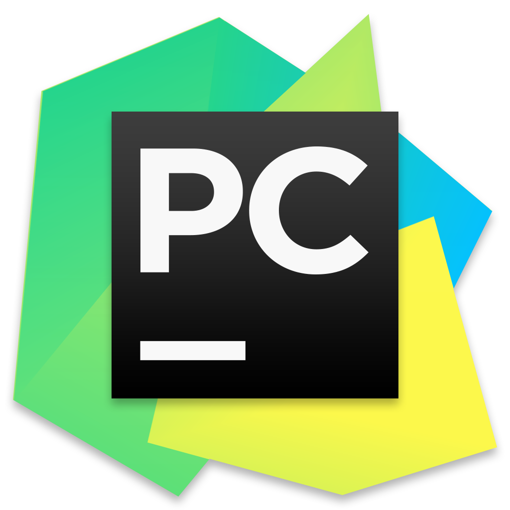对于UI设计，我们使用Sketch®。
以上两个软件都是收费的，因此我们必须在试用期结束前完成工作。
别逗了，我们当然会使用破解版。
我们决定在第一次迭代中完成这些素材：
| 注册页面 | 2 | 3 | 1
|
| 登录页面 | 1 | 1 | 1
|
然而在迭代中点的会议上，我们发现我们的速度比预想的要快，我们一天可以完成2个点的工作，于是我们决定增补两个素材：
| 教师主页 | 2 | 2 | 忽略不计 |
| 学生主页 | 2 | 2 | 忽略不计 |
这样一来我们在第一次迭代中可以完成17个点共计4个素材的工作。
在此次迭代中，我们遇到的难点有：
很快十天的时间到了，我们第一次将我们的产品完成的部分交予客户进行检验。
客户高度评价了我们的工作
（吹吧，你tm就吹吧）
，但是同时也提出了新的需求。
客户希望我们向系统中添加一个学生向老师提出自己在课外做到的有问题的题目的功能。
采用敏捷开发的优势就是随时欢迎改变需求，于是我们就向需求列表中新增了这些项目：
| 素材 | UI设计时间（单位：点） | 前端开发时间（单位：点） | 后端开发时间（单位：点） |
|---|---|---|---|
| 学生自由提问（学生端） | 2 | 2 | 1
|
| 学生自由提问（教师端） | 2 | 2 | 1
|
我们决定在第二次迭代中完成除了新增需求外所有其他的素材，即：
| 新建调查 | 2 | 2 | 1
|
| 调查列表 | 1 | 2 | 1
|
| 显示调查的详细信息 | 2 | 2 | 1
|
| 显示数据报表 | 1 | 2 | 1
|
| 学生选择问题 | 2 | 2 | 1
|
在此次迭代中，我们遇到的难点有：
我们第二次交付产品时，除了上次新增加的功能以外整个程序已经都完成了。
我们和客户都一致认同，下次迭代完成时我们可以完成整个程序，并将之发布了。
在第三次迭代中我们需要完成最后两个素材：
| 学生自由提问（学生端） | 2 | 2 | 1
|
| 学生自由提问（教师端） | 2 | 2 | 1
|
在此次迭代中，我们遇到的难点有：
在完成了最后的开发任务后，我们就可以将我们的网站部署到服务器上了。然而，我们不可能买得起一台真正的服务器
其实我相信有个人是买得起的
，更不可能费那么多功夫申请一个专用的域名。幸而在现代这个云服务高度发达的时代，有云服务器可以供给我们使用，我们选择了好雨云®这个可以免费部署网站的云服务器。
然而这部署工作也是费了一番波折的，首先我们要在根目录下建立requirements.txt，用来告诉服务器你的项目依赖的包。接着还需要建立Procfile文件来告诉服务器如何运行你的程序。
这些任务都结束后，我们成功地部署了我们的网站，但是在登上网站做测试的时候，我们发现部分静态文件无法访问了，在查阅了官方文档后我们发现我们需要一个叫White Noise的包来帮助服务器找到静态文件。我们安装了这个包（并将其加入requirements.txt）然后修改wsgi.py如下：
import os
from django.core.wsgi import get_wsgi_application
from whitenoise.django import DjangoWhiteNoise
os.environ.setdefault("DJANGO_SETTINGS_MODULE", "'''此处填写工程名称'''.settings")
application = DjangoWhiteNoise(get_wsgi_application())
静态文件的问题就这样解决了，但是我们还遇到了一个问题：我们在开发阶段使用的是sqlite数据库，这个数据库是用文本文件保存的，因此本地修改和查询都很方便，但是在生产环境中，由于我们使用的是云服务器，每次部署的时候都会导致目录下的所有文件被删除，况且由于无法从外部网络访问，无法备份数据，所以这种用文件表示的数据库并不是最佳选择。
所以我们决定在生产环境下使用mySQL数据库，我们采用这个数据库的原因是：
最后，由于有时需要在没有网络的条件下调试程序，我们将所有JS/CSS库都下载到本地来使用，在生产环境下，我们为了减轻服务器的压力，使用了网上的CDN服务，由其他服务器提供常见的JS/CSS库（如jQuery和Bootstrap）。
为了让项目保持生命力，后期维护是很重要的，我们需要随时跟踪用户汇报的Bug和用户更新的需求，并对代码进行修改。
此外，服务器的空间是有限的，如果储存的数据过多就会导致服务器无法继续正常工作，所以需要后期及时清理数据。
最后，由于暂时只有我们自己的学校
的一个班级的部分同学
使用这个系统，我们没有提供学校管理页面，这意味着学生的升级和教师的重新分配需要我们自己写更新脚本来实现。或许某一天，使用的人数会足够多，让我们觉得做一个学校管理页面是有必要的，不过现在就让它这样好了。
在开发很多web app时，在包括登录和注册页面等的一系列页面中都能见到form表单的运用，
同时，对表单有效性的检查也成为了一个让人
抓狂
不能不仔细考虑的问题。
实际上最容易实现的方式就是前端完全不考虑表单的有效性，只是将整个表单序列化之后将其全部
甩锅
发送给后端，并让后端负责有效性检查，再通过重定向到错误提示页面来实现。
但是我并不认为这是个好的方法，原因有以下几点：
所以我们决定使用Ajax的方式验证表单，具体来说就是每次表单中的某个数据更改，就将数据发送到后端来进行验证。
本着不重复造轮子
偷懒
的原则，我们首先在网上搜索了一些现成的表单验证器，但我们发现这些验证器：
所以我们
头脑一热就
决定自己开发一款专用表单验证器
，我到现在都后悔做出这个决定
。
首先我们明确了需求：我们需要一段程序，它可以：
一开始，我们试图在原有的JS代码中添加表单验证逻辑，但是这让代码中多出了大量的重复代码，我们很快意识到单独做一个表单验证库是有必要的。
在对原有代码进行了一些重构后，我们成功地剥离了表单验证逻辑，并且得到了下面的代码
/**
* 单个field验证器
* @param csrf_token 发送给服务器的csrf token
* @param object_to_validate 要验证的对象（jQuery对象）
* @param validated_called_func 验证完成后调用的函数
* @param url_to_send_value_to ajax验证地址
* @param other_object_to_send_with 要一同发送的其他对象
* @param user_validate_func 用户自定义验证函数（优先级高于ajax验证）
*/
function Validator(csrf_token, object_to_validate, validated_called_func, url_to_send_value_to, other_object_to_send_with, user_validate_func) {
this.object_wrapped = object_to_validate;
this.url_to_send = url_to_send_value_to;
this.data_objects = other_object_to_send_with;
this.func = user_validate_func;
this.validated = validated_called_func;
this.validate = function () {
var to_post = [
{name: "csrfmiddlewaretoken", value: csrf_token},
{name: this.object_wrapped.attr("name"), value: this.object_wrapped.val()}
];
if (this.data_objects != null) {
for (var i = 0; i < this.data_objects.length; ++i) {
var data_obj = this.data_objects[i];
to_post[to_post.length] = {name: data_obj.attr("name"), value: data_obj.val()};
}
}
if (this.func != null && !this.func()) {
if (this.validated != null) {
this.validated(false);
}
return false;
}
var is_success = false;
$.post(this.url_to_send, to_post, function (ret) {
is_success = ret.is_valid;
});
if (this.validated != null) {
this.validated(is_success);
}
return is_success;
}
}
/**
* field组验证器
* @param all_validators 包含的子field验证器
* @note 在外部调用validate来验证子field
* @note 在外部调用isAllValid来检验是否整个组都通过了验证，可以用来判断是否允许表单提交
*/
function ValidatorGroup(all_validators) {
this.validators = all_validators;
this.is_valid_last_time = [];
for (var i = 0; i < this.validators.length; ++i) {
this.is_valid_last_time[i] = false;
}
this.validate = function (which_to_validate) {
if (which_to_validate == null) {
for (var i = 0; i < this.validators.length; ++i) {
this.is_valid_last_time[i] = this.validators[i].validate();
}
} else {
this.is_valid_last_time[which_to_validate] = this.validators[which_to_validate].validate();
}
};
this.isAllValid = function () {
return this.is_valid_last_time.every(function (ele) {
return ele;
});
}
}开始我们发现这段代码并不正常工作——没有一个验证能通过。很快我们发现这是因为ajax默认是异步的（正如其名所示【第一个a代表async，异步】），在服务器能够返回数据之前，validate函数已经返回false了。 当然有一个quick and dirty的解决方案：强制使用同步ajax，实现这点十分简单，在ajaxSetup中将async的值设置为false即可。
然而我们的直觉告诉我们这可能并不是个好主意
我刚写的时候就TM料到了，可我TM就是懒得改
。果然，在很慢的网速下测试的时候，这样做的缺陷暴露无遗：数据交换阻塞了主线程，导致每敲击一下按键就需要等待很久，等浏览器获取到服务器的验证结果后才能继续操作。
这样的产品显然不可能令人满意！虽然现在网速普遍可以在可接受的时间内完成这种数据交换，但是仍存在一些区域
例如我家和宝图、以及（我猜的）信号屏蔽器下的学校
网络条件不佳。我们相信一个异步的表单验证器是有必要的。
但是编写异步表单验证器并不容易，我们至少面对着这些困难：
面对第一个困难，我们采用了这样的方法：对于每个field的验证器，都保存一个自增的token，在ajax发送请求时与数据一同发送给服务器，服务器处理验证请求时，对这个token不加处理地返回，在服务器收到回复的时候，检验服务器返回的token和内部保存的token是否相符，若不相符，则这一回复不是针对最新的请求的，那么我们就可以直接丢弃这一返回数据。
第二个困难的解决则没有那么显而易见，现有的代码这样工作：
明显这些步骤必须是严格按顺序执行的，如果其中的ajax验证是异步的话，下面的步骤都无法获得应有的效果。幸运的是，我学习过设计模式，这一组威力强大的工具中刚好有一个适合用在这种情况之下（当然，我们需要对其进行少量的修改）。
不要调用我，我会调用你
我想，你已经从这句话中认识到我们要采用何种模式了：没错，正是观察者模式，但是和正规的观察这模式略有区别：正规的观察者模式有多个观察者和一个主题对象，在我们这里，显然，应该有多个主题对象——field验证器，和一个观察者——field组验证器。
所以我们把工作流程改成了这样：
这样阻塞主线程的问题不复存在，我们得到了如下的代码：
/**
* field组验证器
* @param validators 包含的子field验证器
* @param redisplay_function 在数据更新后用来更新DOM的函数
* @note 在外部调用validate来验证子field
* @note 在外部调用isAllValid来检验是否整个组都通过了验证，可以用来判断是否允许表单提交
*/
function ValidatorGroup(validators, redisplay_function) {
validators.forEach($.proxy(function (validator, index) {
this.validators.push(validator);
this.is_validated.push(false);
validator.observer = this;
validator.index = index;
}), this);
this.real_redisplay_func = redisplay_function;
this.redisplay = function () {
this.real_redisplay_func(this.is_all_validated());
};
}
ValidatorGroup.prototype = {
validators: [],
is_validated: [],
is_all_validated: function () {
var ret = true;
this.is_validated.forEach(function (is_this_validate) {
ret = ret && is_this_validate;
});
return ret;
},
validate: function (index) {
this.validators[index].validate();
}
};
/**
* 单个field验证器
* @param csrf_token 发送给服务器的csrf token
* @param the_obj 要验证的对象（jQuery对象）
* @param after_validate_fun 验证完成后调用的函数
* @param url_to_send_value_to ajax验证地址
* @param send_when_validate 要一同发送的其他对象
* @param custom_validate_func 用户自定义验证函数（优先级高于ajax验证）
*/
function Validator(csrf_token, the_obj, after_validate_fun, url_to_send_value_to, send_when_validate, custom_validate_func) {
this.csrf_token = csrf_token;
this.the_object = the_obj;
this.after_validate = after_validate_fun;
this.url_to_send_value_to = url_to_send_value_to;
this.send_when_validate = send_when_validate;
this.custom_validate_func = custom_validate_func;
this.ajax_id = 0;
}
Validator.prototype = {
observer: null,
index: -1,
validate: function () {
/*控件为空，认为验证失败*/
if (this.the_object.val() == "") {
if (this.after_validate != null) {
this.after_validate(false);
}
this.observer.is_validated[this.index] = false;
this.observer.redisplay();
return;
}
if (!(this.custom_validate_func != null && !this.custom_validate_func())) {
if (this.custom_validate_func != null && this.custom_validate_func() && this.url_to_send_value_to == null) {
/*用户提供的验证函数成功*/
if (this.after_validate != null) {
this.after_validate(true);
}
this.observer.is_validated[this.index] = true;
this.observer.redisplay();
return;
}
} else {
/*用户提供的验证函数失败*/
if (this.after_validate != null) {
this.after_validate(false);
}
this.observer.is_validated[this.index] = false;
this.observer.redisplay();
return;
}
/*序列化控件*/
var to_post = [
{name: "csrfmiddlewaretoken", value: this.csrf_token},
{name: this.the_object.attr("name"), value: this.the_object.val()},
{name: "ajax_id", value: ++this.ajax_id}
];
/*序列化附加控件*/
if (this.send_when_validate != null) {
var i;
for (i = 0; i < this.send_when_validate.length; ++i) {
to_post[to_post.length] = {
name: this.send_when_validate[i].attr("name"),
value: this.send_when_validate[i].val()
};
}
}
function ajax_validate(ret) {
if (ret.ajax_id != this.ajax_id) {
return;
}
var is_success = ret.is_valid;
if (this.after_validate != null) {
this.after_validate(is_success);
}
this.observer.is_validated[this.index] = is_success;
this.observer.redisplay();
}
if (this.url_to_send_value_to != null) {
$.post(this.url_to_send_value_to, to_post, $.proxy(ajax_validate, this));
}
}
};经测试，这个验证器工作正常。虽然代码写的并不尽善尽美（参数列表太长，我应该用一个JS对象来初始化的），但至少能用。我相信未来如果有必要，我将重构它，但现在——就让它这样好了。
我们曾经尝试过用样式化其他DOM元素的方式用CSS为Checkbox添加样式，然而无论如何浏览器给我们的都是系统默认的Checkbox样式。
像这样：
如此之小的Checkbox不仅点选不方便，而且长得也不好看，我们看了网上的说明，发现现在标准的CSS确实无法对Checkbox进行样式化。所以，我们必须另想办法。
仍然是本着不重复造轮子
偷懒
的原则，我们在网上寻找了一些解决方案，幸运的是，这个问题已经被无数先人解决过了，而且解决方案确实适用于我们的项目。
我们发现了这些解决方案:
其中一二两点好理解，无需多说，第三点的CSS伪元素略有难度，在此贴上代码：
<!-- HTML --><code><input type="checkbox" id="demo-1"/><label for="demo-1">demo</label></code></pre>/*CSS*/
#demo-1 + label::before {
content: '\a0'; /*外框*/
display: inline-block;
width: 1.5em;
height: 1.5em;
background: #c7e9ff;
border-radius: 5px;
}
#demo-1 {
position: absolute;
clip: rect(0, 0, 0, 0);
}
#demo-1:checked + label::before {
content: '\2713'; /*勾号*/
padding-top: 1px;
background: #9bbdd2;
color: white;
text-align: center;
}效果：
我们虽然能写出这段代码
说真的，不写论文我才不写这玩意儿
，但是我们最终为了方便起见，我们仍然使用了别人封装好的库iCheck。
iCheck的使用方式非常之简单，只需引入对应的CSS和JS，然后这样调用（以flat皮肤为例）：
$(function(){
$("input[type='checkbox']").iCheck({
checkboxClass: 'icheckbox_flat'
});
});就能得到如下结果:
由于需要选择一个调查的起止日期，我们需要选择一个好用的日历控件。
一开始我们选用的是jQuery UI的日历控件，但是只是使用这样一个控件就必须把整个jQuery
UI库引入，非常不值得，还会浪费用户的流量，况且，jQuery UI的日历长得实在是难以让人恭维。
（说真的，丑爆了！我当初选择它的理由？一定是熬夜熬多了脑子烧掉了！）
于是我们开始寻找替代品，很快，我们发现了一款名叫bootstrap-datetimepicker的Bootstrap插件，可以用来实现日历控件。
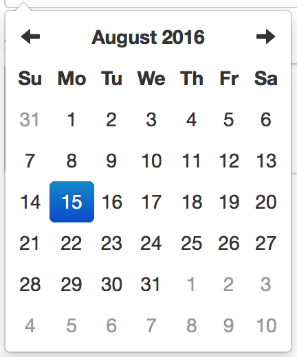但是在移动端进行测试的时候，我们发现几乎所有手机都对HTML 5的date控件提供了原生支持——手机都能显示各种各样不同的自带日历控件。这样在移动端有时就会显示两个日历控件，这可能会让用户感到疑惑和不满。在后续的测试中，我们还发现电脑端的Chrome也提供了内置的控件。
于是我们决定根据设备和浏览器类型来判断是否需要显示日历控件。
我们查阅了大量资料，发现原本在jQuery中有一个$.browser可以用来查询浏览器信息，但是自从1.9版本之后就被移除了，代替它的是$.support，它只能提供少量的浏览器支持信息，不能满足我们的需求。
我们最终只好采用对原生JS的navigator.userAgent进行分析，来判断浏览器版本了。
最终我们采用了这样的代码来完成这一整个任务：
var ua_str = navigator.userAgent;
/*在手机端或者桌面端Chrome浏览器中，存在默认的日期选择控件，在其他浏览器上需要由我们自己提供这一控件*/
if (!(ua_str.indexOf('iPhone') > -1 || ua_str.indexOf('Android') > -1 || ua_str.indexOf('Chrome') > -1)) {
$("input[type='date']").datetimepicker({
format: 'yyyy-mm-dd',
minView: 2,
maxView: 2
});
} 值得一提的是，navigator.userAgent在官方文档中被标记为Deprecated，这代表它有可能某一天突然就不能用了，然而，我们也没有其他的办法，希望未来的Web标准能提供合适的解决方案（或者，希望未来的浏览器都有原生的日历控件）。
Django的ImageField是很有趣
有毒
的一个东西，它在数据库中的存储方式是一个指向图片文件的路径。
在我们的开发过程中，由于服务器存储条件限制，我们希望把所有的图片的长宽都限制在1024px之内，且为了方便起见，我们希望所有的图片都以png格式储存。
一开始我们希望直接用pillow库的Image对象来对上传的照片直接进行缩放和修改格式操作，但是我们很遗憾地发现这并不能成功——因为上传的照片不在文件系统中，而我所知的唯一可以将照片保存到文件系统的东西就是ImageField。
然而要使用ImageField就必须把整个Model构造好，然而要修改构造好的Model中的ImageField实际上是非常复杂的（需要深入Django的存储系统）。
最终我们的代码像这样：
# 将图片的长宽都限制在1024px之内
image = Image.open(the_user.image)
image.thumbnail((1024, 1024), Image.ANTIALIAS)
# 删除原有图片文件
old_file_name = the_obj.image.name
the_obj.image.storage.delete(old_file_name)
# 将图片转化为png,保存到'原有文件名+.png'
new_file = the_obj.image.storage.open(old_file_name + '.png', 'wb')
image.save(new_file, 'png')
# 通知model文件的更改
the_obj.image.name += '.png'
the_obj.save()这段代码看起来不太标准，但是我无法从官方文档中翻到解决方法，在阅读了Django的部分源码后，我才写出了这段代码。希望下一版本的Django提供了更好的解决方案。
每个程序员都应该学习三种编程语言（即使不用他们来进行日常开发）：一种面向过程的，一种面向对象的，一种函数式的。
幸运的是，Python作为一种多范式的编程语言，允许你用任何一种编程范式进行开发（这是我喜爱Python的原因之一
，Java就不同了，强行面向对象，不是对象也得凭空创造对象
）。
我在学习了Haskell之后，发现了函数式编程思想的强大之处，自此我的程序代码的长度大大减短了，为何？作为一个例子，请思考下面的问题：
1到10000中，末尾为7或为7的倍数的数的总和是多少？
传统的命令式编程会这么写
sum_ = 0
for i in range(1,10001):
if i % 7 == 0 or i % 10 == 7:
sum_ += i只有4行，够短了是不是？可是实际上，用函数式一行就搞定了
sum_ = sum(filter(lambda i: i % 7 == 0 or i % 10 == 7, range(1, 10001)))或是使用列表推导式（可以得到更高的运行效率）：
sum_ = sum([i for i in range(1, 10001) if i % 7 == 0 or i % 10 == 7])看上去很酷是不是？可是函数式编程不仅仅是看上去酷，实际上，它天生利于用多线程（对于Python，是多进程）提高运行效率。
比如现在有一个列表l1，要对其中所有的数据进行某一个操作，例如将其平方,再放入列表l2输出来，在命令式编程中会这样写：
l2 = []
for i in l1:
l2.append(i*i)然而在函数式编程中，这仍然是一行代码的事：
l2 = list(map(lambda i:i*i,l1))仔细读这段代码，会发现上面那段代码中的for循环隐含了从头到尾依次计算的意思，这代表程序运行的时候要按顺序一个个扫过l1中的每个数据，将其平方，放入l2后才能接着处理下一个数据，而下面这一个程序只是说l2是对l1中的每个数据“应用“了“平方“运算后的结果，并没有任何运算顺序的要求，这意味着可以让多个CPU同时处理多个数据。
要让上面的程序多线（进）程化，你需要对程序进行很大的改动（引入一个生产者／消费者模型），还会面临死锁（这个程序或许不会，但别的程序会）等乱七八糟的问题，可是下面一个程序只需要用多线（进）程库创建一个线（进）程池，然后用pool.map代替map就结了，一共只新增了2行代码。
此外，函数式编程还有很多其他好处，例如纯粹的函数式编程是无状态的，这意味着在你阅读程序的时候，读这一段的时候无需考虑其他部分。还有函数式编程的抽象层次高，多是告诉电脑解决问题“要做什么“，而命令式编程却需要告诉电脑每一步“要如何做“。更棒的是函数式编程还提出了“无限列表“的概念（在Python中使用生成器实现），可以构造一个无限的列表，在使用时需要多少就计算多少元素。
我们在项目的代码中也使用了函数式编程的思想，最大的用途就是对数据库中的数据map一个操作上去，具体可以自行参阅代码。
虽然函数式编程有各种优点，但是也并非尽善尽美，对于熟悉函数式编程的人来说，函数式的代码非常容易理解，但是对于一些不熟悉它的人来说就如同天书。
但是函数式编程如此的酷，我希望每个程序员都能会一点。
以下是设计图（使用Sketch®绘制）：
以下是效果图（在macOS Safari和iOS 9 Safari【使用iOS模拟器】上的截屏）：
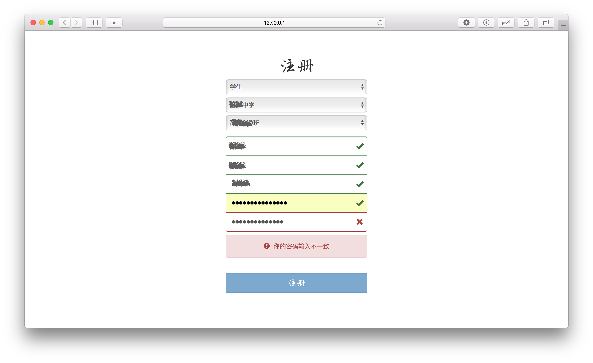 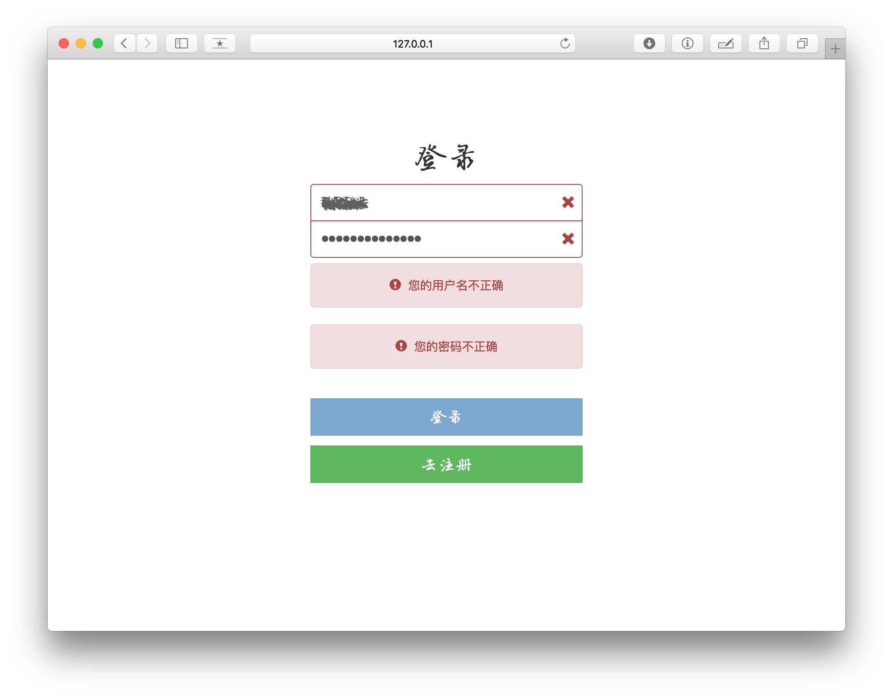 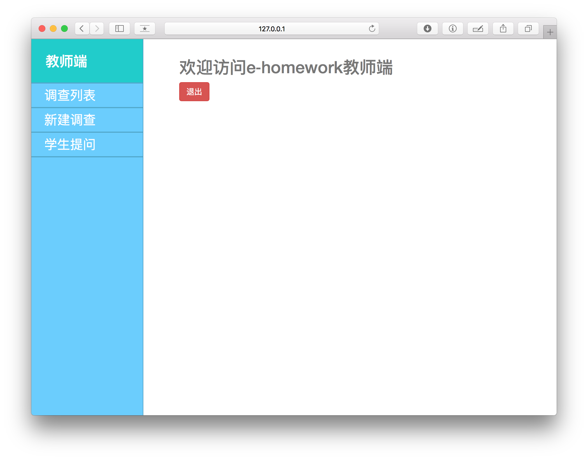 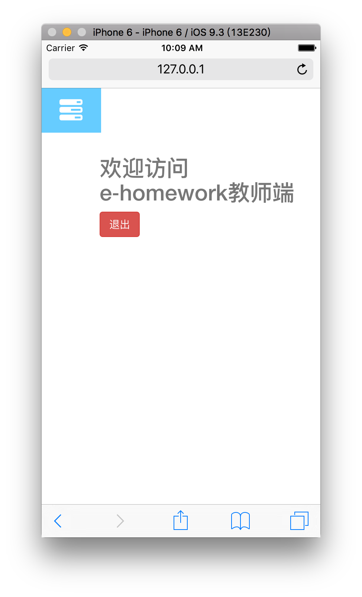 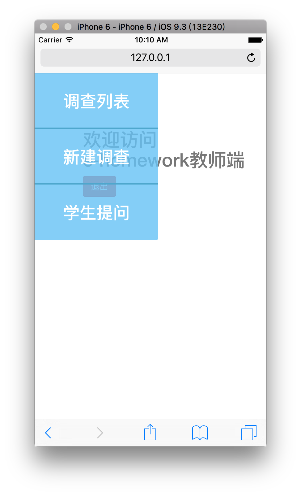 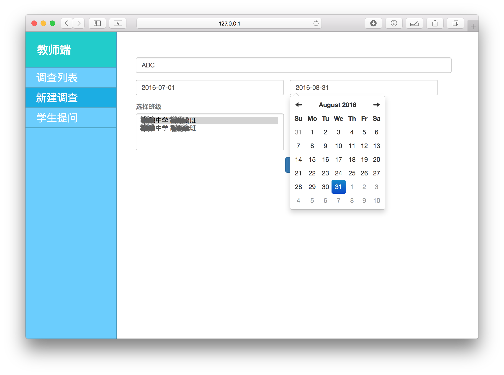 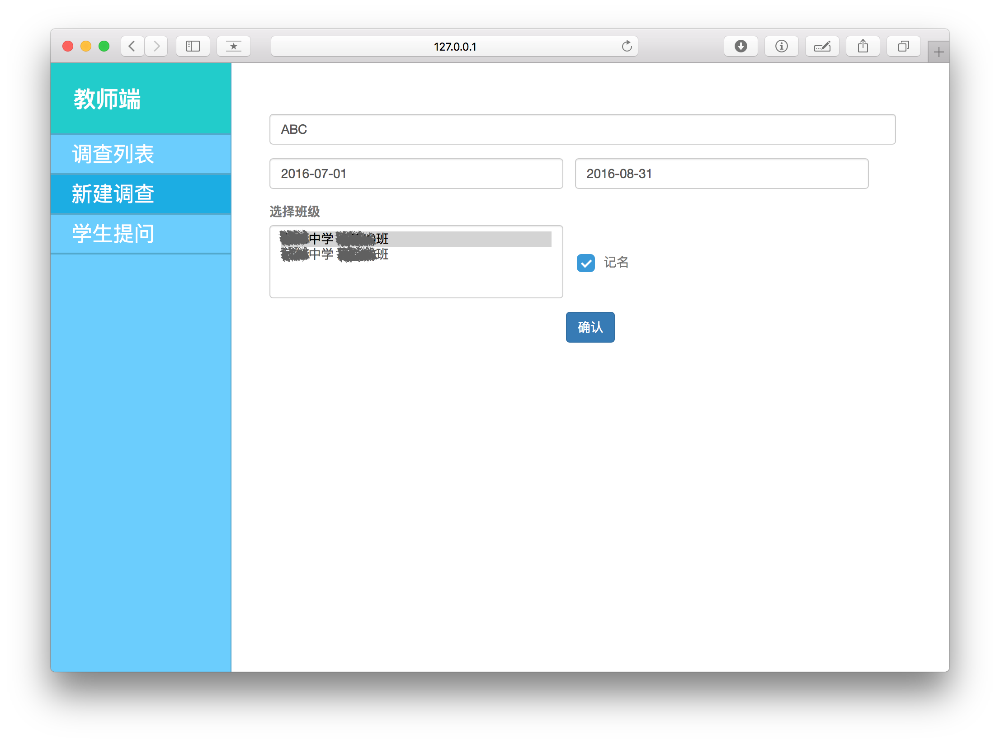 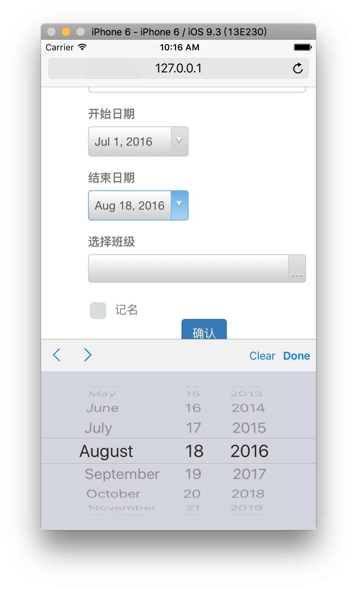 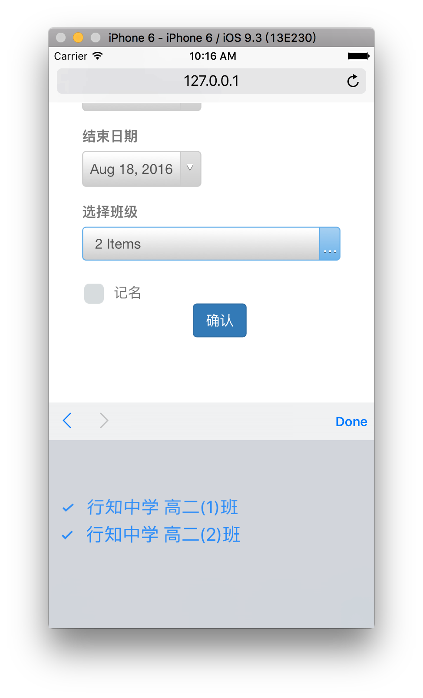 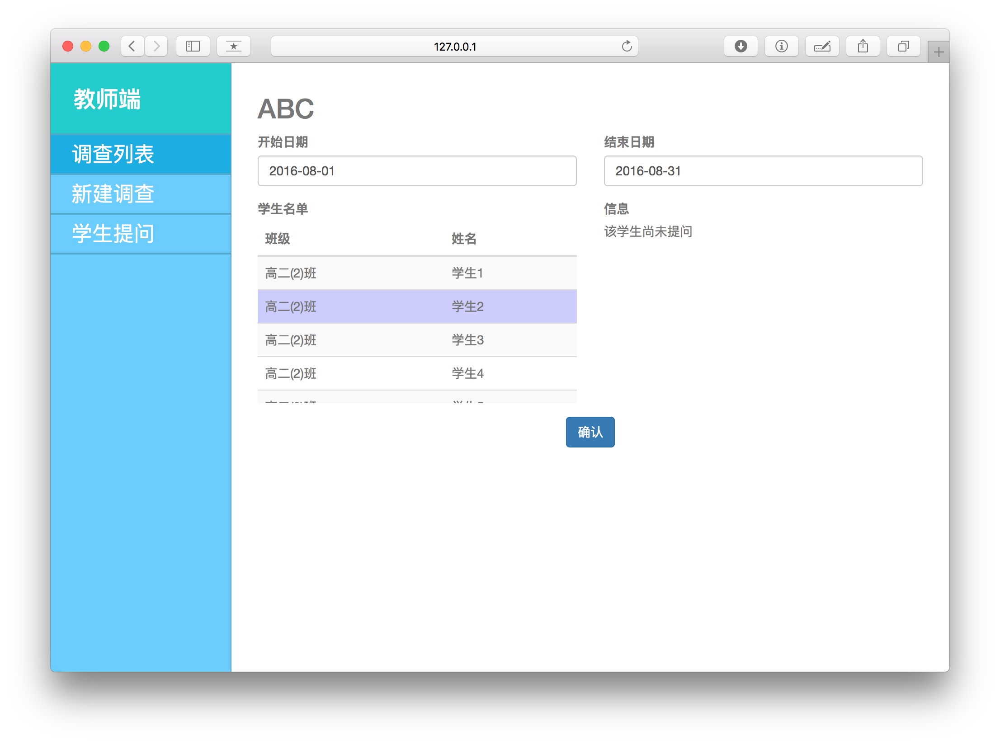 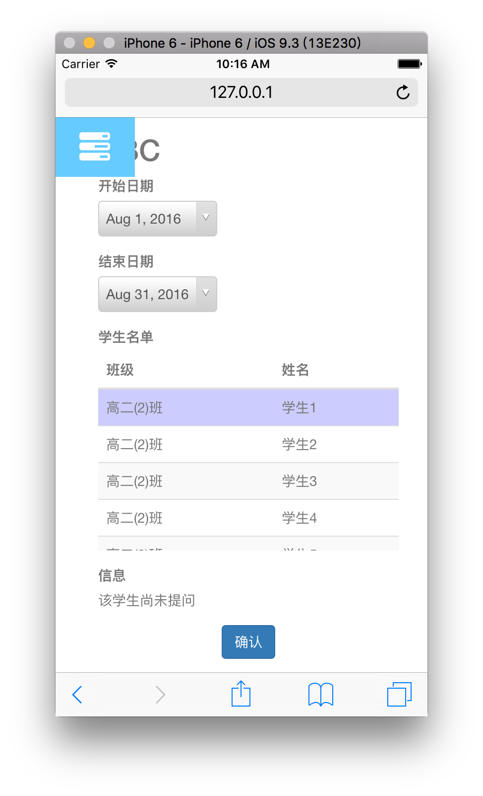其实我很讨厌写这一整篇东西，与其写这乱七八糟的一大团浆糊，还不如去写API参考。
但是我还是写了，为了交差。
我不理解，为什么做课题一定要交这种无聊的东西呢？做出一个好用的产品还不够好么？如果不写这一篇垃圾玩意，说不定我能多塞几个功能进去。
还有各种各样复杂的手续等等，某个政府就是这样鼓励创新的？
抱怨的话，就到这里了。
这是我第一次和别人合作开发软件。
和代码相比，人，才是最复杂的东西。
代码是死的，只要你能读懂，就能明白它做了什么，用的时候就能放心了。
可是人啊，谁能说能真正理解他人了呢？
更多的情况下，恐怕我们连自己都无法理解吧。
可是在这样的情况下，居然能把人组织起来做成事情，无疑是件神奇的事。
可惜我是个糟糕的领导，我从未成功地让任何人按照我的想法工作过。
所以我觉得，我需要有人来领导。我更适合作为顾问工作，或者干脆就当个小码农。
再看我们的产品，这东西虽然十分简单，但无处不体现了我们“要做出伟大产品“的决心，的确，它可以做的更好，但是我们的技术水平已经到极限了。
相信未来我们能学到更多的东西，让我们有更强的能力制作更好的产品，说不定某一天，就会从我们手中诞生一件真正伟大的产品，但前提是我们没有忘记我们的决心。
现在的中国社会，想要致富的商人太多，能静下心做产品的人太少，有多少人怀揣着改变世界的梦想离开校园，却终被不良的社会风气同化，变为了追求利润的工具？
我希望未来，我能少听到这样的话：
这个项目不挣钱，我们把它砍掉
而多听到这样的话：
这个项目不够酷，我们把它砍掉
我相信如果每个人都能尽力去做更“酷“的事，我们的世界也将变得更“酷“。
只有那些拒绝服从现实的人，才能改变现实！
最后我想向我的组员道谢，感谢他们可以忍受我这样一个
不合格的
管理者。
你们要我发给你们工钱还是请你们吃饭？
并且我还要感谢我们的指导老师，说实话我们给她添了不少麻烦。
最后一句话：
不忘初心，方得始终。